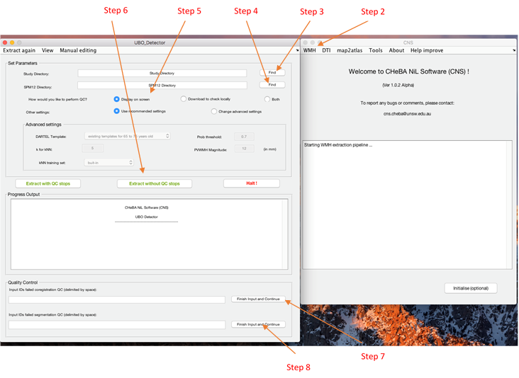
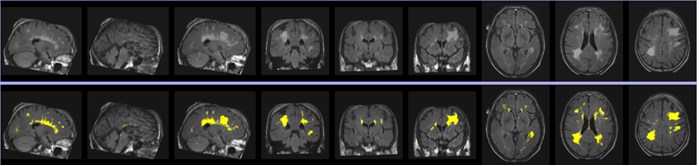

UBO Detector is a cluster-based white matter hyperintensity (WMH) extraction pipeline based on k-nearest neighbors (k-NN) algorithm, using T1-weighted and Fluid Attenuation Inversion Recovery (FLAIR) MRI sequences.
If you used UBO Detector, please cite:
Jiyang Jiang, Tao Liu, Wanlin Zhu, Rebecca Koncz, Hao Liu, Teresa Lee, Perminder S. Sachdev, Wei Wen. UBO Detector - A cluster-based, fully automated pipeline for extracting white matter hyperintensities. NeuroImage 174:539-549, doi.org/10.1016/j.neuroimage.2018.03.050
UBO Detector has been tested on both CentOS release 6.8 and macOS Sierra with the following software/toolboxes installed:
1. SPM12 (http://www.fil.ion.ucl.ac.uk/spm/software/spm12/)
2. FSL v5.0 (https://fsl.fmrib.ox.ac.uk/fsl/fslwiki)
3. MATLAB R2016a or above with the following toolboxes installed (we received reports from users that older MATLAB may also work.)
Image Processing Toolbox (ver 9.5 tested)
Statistics and Machine Learning Toolbox (ver 11.0 tested)
Parallel Computing Toolbox (ver 6.9 tested)
In order to fit in UBO Detector, both T1 and FLAIR sequences are required (*.nii or *.nii.gz). The data should be named with a unique ID which can be numeric numbers or letters or combination of the two, followed by an underscore (e.g. 1111_ABCstudy_T1.nii, 1111_flairABC.nii.gz), and stored in two folders (T1 and FLAIR (all upper case)) under the study folder. For example,
This section describes how to extract WMH with UBO Detector graphic user interface (GUI).
Step 1: In MATLAB, addpath ('/path/to/CNS') and run CNS
Step 2: Open the UBO Detector through WMH -> Extract WMH.
Step 3: Find the Study Directory by clicking Find.
Step 4: Find spm12 folder.
Step 5: Specify how you would like to view the coregistration, segmentation, and final results for quality control (QC).
Display on screen - Results will be displayed in MATLAB web browser by calling the web function in MATLAB.
Download to check locally - Results will be exported into a HTML webpage, and compressed for download.
Both - Both Display on screen and Download.
Step 6: Extract with QC stops if you want to exclude scans failed coregistration or segmentation QC, or Extract without QC stops if you want to complete the extraction without stops. Extract without QC stops will not allow you to exclude any subjects from the process, but will generate the same QC figures as Extract with QC stops (i.e. coregistration, segmentation, final QC), which is stored in the /path/to/studyFolder/subjects/QC folder.
Step 7: If selected "Extract with QC stops" in Step 6. The pipeline will generate QC webpage after coregistration. Depending on the means of viewing the results specified in Step 5, the coregistration results will be either displayed as a webpage on screen, or available for download, or both display and download. Please input the IDs failed coregistration QC (separated by space) in the Quality Control section, and click Finish and continue.
Step 8: If selected “Extract with QC stops” in Step 6. The pipeline will generate QC webpage after segmentation. The segmentation results will be available according to what you specified in Step 5. Input the IDs failed segmentation QC (separated by space) in the Quality Control section, and click Finish and continue.
Step 9: The final results will be available according to Step 5 after finishing all the extraction steps.
UBO Detector will provide both image and text file output. WMH volumes are calculated in SPM's DARTEL space. Therefore, there is no need to adjust for intracranial volume (ICV). By default, any WMH voxels less than 12 mm from lateral ventricles are considered as periventricular WMH regions.
An example of extracted WMH. The first row is three slices of FLAIR on each plane, and the second row is extracted WMH overlain on FLAIR.
Image output of whole brain WMH is located at:
/path_to_studyFolder/subjects/ID/mri/extractedWMH/ID_WMH.nii.gz
Image output of regional WMH is at:
Periventricular WMH: /path_to_studyFolder/subjects/ID/mri/extractedWMH/ID_ PVWMH.nii.gz
Deep WMH: /path_to_studyFolder/subjects/ID/mri/extractedWMH/ID_DWMH.nii.gz
Lobar WMH: /path_to_studyFolder/subjects/ID/mri/extractedWMH/lobarWMH/ID_*_WMH.nii.gz
WMH in arterial territories: /path_to_studyFolder/subjects/ID/mri/extractedWMH/arterialWMH/ID_*_WMH.nii.gz
Abbreviation of arterial territories: A.A.H., anterior artery hemisphere; A.A.C., anterior artery callosal; A.A.M.L., anterior artery medial lenticulostriate; M.A.H., middle artery hemisphere; M.A.L.L., middle artery lateral lenticulostriate; P.A.H., posterior artery hemisphere; P.A.C., posterior artery callosal; P.A.T.M.P., posterior artery thalamic and midbrain perforators.
In addition to WMH volumes, UBO Detector also counts total number of WMH incidences (NoI), i.e. number of 26-connection clusters, as well as the number of punctuate (less than 10.125 mm^3, i.e. 3 voxels on DARTEL space), focal (less than 30.375 mm^3, i.e. 9 voxels on DARTEL space), medium (less than 50.625 mm^3, i.e. 15 voxels on DARTEL space), and confluent (over 50.625 mm^3) incidences. Both volumes and NoI of the whole brain, as well as periventricular, deep, lobar, and arterial regions, are summarized.
Individual WMH estimation can be found at:
/path_to_studyFolder/subjects/ID/stats/ID_WMH_vol.txt
/path_to_studyFolder/subjects/ID/stats/ID_WMH_NoC.txt
WMH summary of the whole sample is at:
/path_to_studyFolder/subjects/WMH_spreadsheet.txt